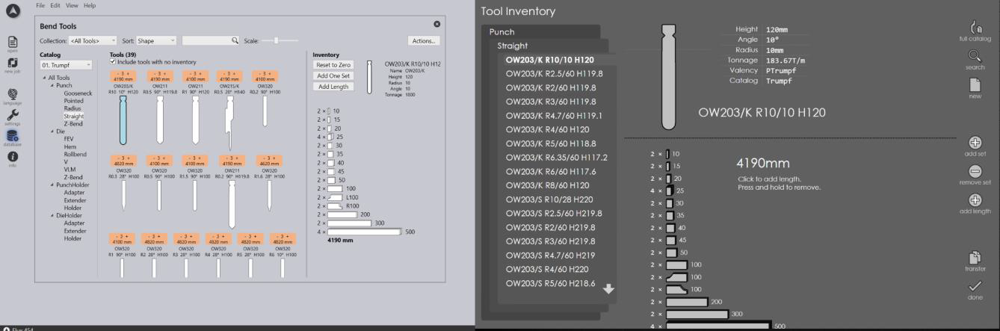
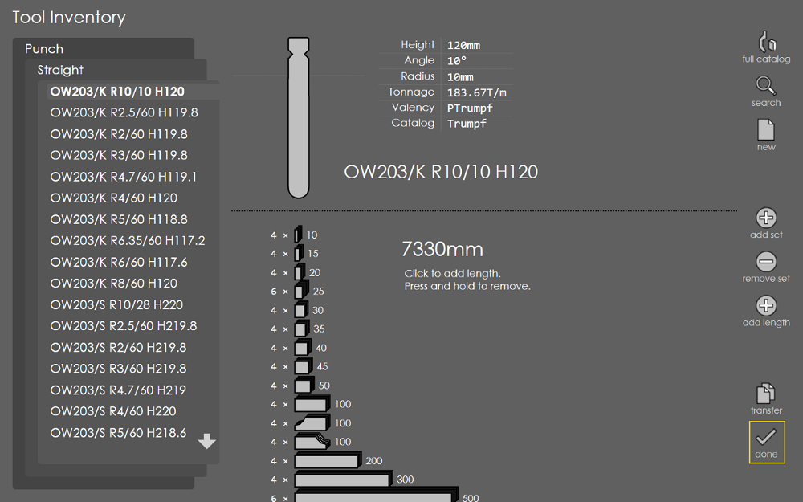
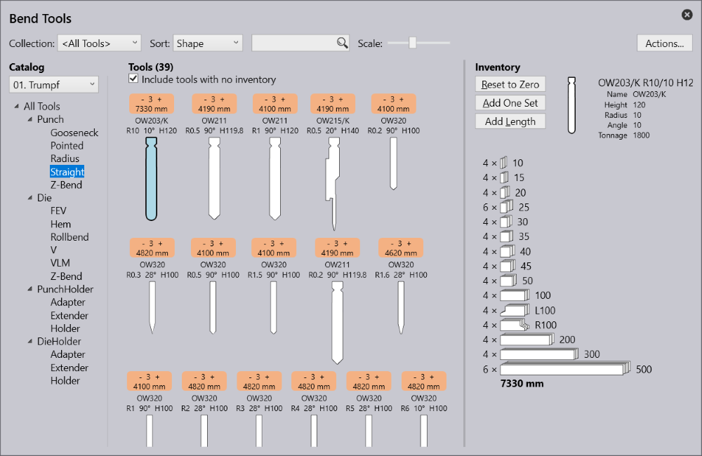

The tools catalogs, tool inventories and machine settings are synchronized across all Praxis linked applications. The steps below take you through the tool inventory synchronization between Flux and RA running on two different computers.
Launch Flux and RightAngle on separate Praxis liked computers. Browse to same tool inventory on Flux and RightAngle.

Change the inventory on RA station by adding new sets. And press done button to commit the change to Praxis.

Close and open the tool catalog window in Flux and browse the same tool. The inventory should reflect the updated counts. Please note that you do not need to restart Flux for the inventory synchronization. This should work similarly for other databases like custom tools, tool lists, machine settings etc. (There is a known issue with material database sync.)
